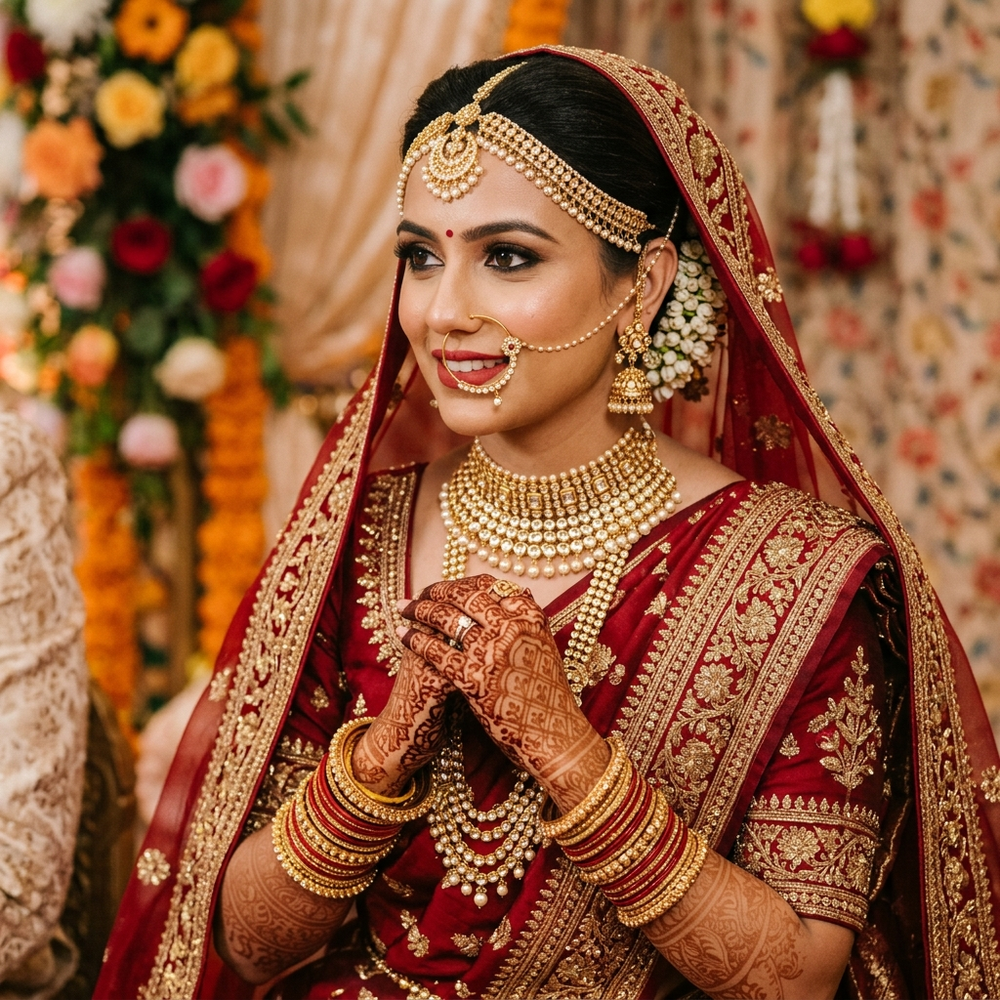
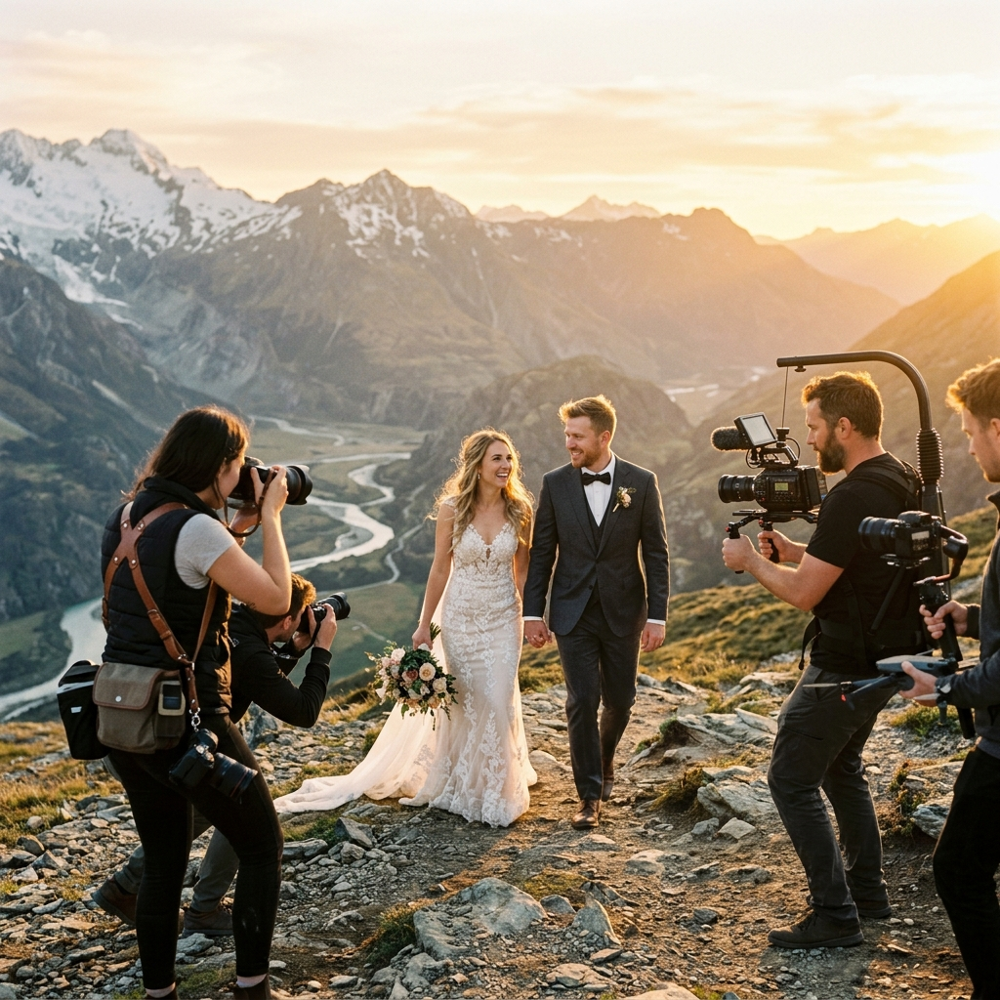
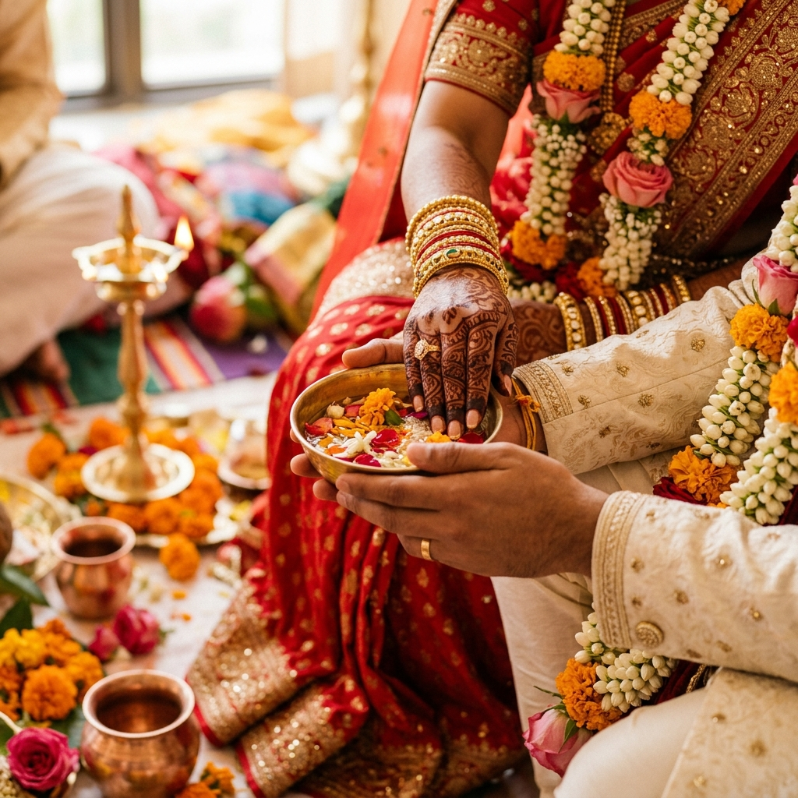
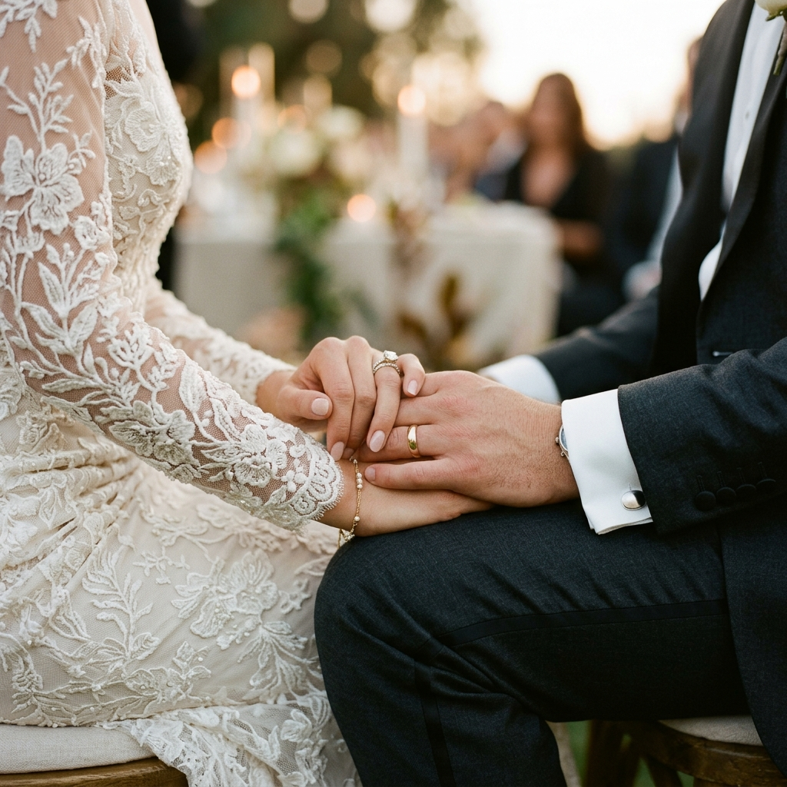

The bridal portrait session is among the most cherished parts of any wedding. We take time to photograph the bride in her full splendor: attire, jewelry, makeup, heirloom details, quiet anticipation, and the emotions that appear before the ceremony begins.
Each portrait is crafted with flattering light, gentle direction, and fine-art finishing so the final images feel elegant enough for albums, frames, and family keepsakes for generations.
We also capture the tiny details around the bride, from embroidered fabrics and jewellery textures to the final mirror glance. These portraits preserve both the beauty of the look and the emotion of the moment.

Couple photography is where genuine chemistry shines. We create natural, lightly guided moments between you and your partner: stolen glances, shared laughter, quiet tenderness, and confident editorial portraits.
Whether we shoot in a lush garden, palace courtyard, beach resort, or urban street, we plan the light, background, and pacing so your portraits feel relaxed, personal, and visually polished.
Our team stays observant and discreet throughout the day, watching for the small gestures that often become the most treasured images. These candid frames add warmth, honesty, and emotional depth to your final wedding gallery.
Book a Couple Session
The unscripted moments are often the most powerful. We document real joy, tears, laughter, family reactions, and emotional transitions without interrupting the natural flow of your celebration.

Capturing emotional vows, first looks, nervous smiles, family blessings, and guest joy as the ceremony reaches its most meaningful moments.

Quiet morning final touches, nervous excitement, family hugs, handwritten notes, and heartfelt words captured with sensitivity and a discreet approach.

Dancing, toasts, conversations, spontaneous laughter, and pure joy with family and friends, all captured candidly through the evening celebration.

India's diverse wedding traditions are rich with meaning, movement, color, and emotion. Our photographers are experienced in covering Hindu, Muslim, Christian, Sikh, and Jain ceremonies with deep cultural sensitivity and attention to sequence.
Every ritual object, sacred gesture, family blessing, and emotional exchange is documented with the respect it deserves, while still maintaining strong composition and beautiful storytelling.
The reception is where the celebration peaks. We capture the grandeur, performances, speeches, decor, dance-floor energy, and intimate moments that unfold late into the night.
The first dance is photographed with cinematic lighting and expressive angles, so every movement and reaction feels alive.
Emotional speeches, laughter, raised glasses, and guest reactions are captured with the room's feeling carefully preserved.
Elegant portraits with guests, family, and the wedding party are organized so everyone looks relaxed and comfortable.
Florals, table settings, lighting design, stationery, and venue styling are photographed before guests arrive and again as the celebration comes alive.
A pre-wedding photoshoot is the perfect opportunity to get comfortable in front of the camera, explore a beautiful location together, and create portraits that stand apart from wedding day coverage.
Choose from our curated list of heritage palaces, city streets, tea estates, beaches, and private venues, or bring us to a place that already holds meaning in your relationship.
We help with outfit planning, location timing, posing comfort, and mood direction so the session feels effortless. The final images can be used for invites, wedding websites, reception displays, and keepsake albums.


Book your photography package early so we can plan the timeline, location strategy, family portraits, and creative direction with care. We accept limited weddings each month to give every couple personal attention.